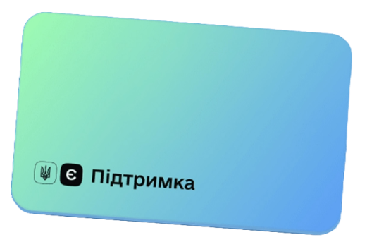

Архітектура сайту і контент, флоу застосунку
eSupport
↓↓↓
За довоєнних часів, коли ще існував ковід, Володимир Зеленський анонсував програму соціальної виплати по 1000 грн всім вакцинованим українцям, щоб заохотити населення вакцинуватись і підтримати бізнес, який постраждав від карантинів.

В мене було 3 дні, щоб з нуля зрозуміти суть програми й створити комунікацію про неї з Україною, аби було зрозуміло і першокурснику, який народився з гаджетами, і бабусі, яка досі відправляє паперову пошту.
За цей час я створила весь копі для проєкту:
✅
Контент для сайту з покроковим викладом інформації
✅
Флоу для розділу послуги в застосунку

Програми виплати державної допомоги — це не те, що часто трапляється в Україні, тому сприйняття і поведінка людей в таких випадках бурхливі.
Вони думають: “Держава дає гроші всім просто так”, а коли розуміють, що не всім — зляться, але не на державу, а на Дію, бо дізнаються про обмеження саме від проєкту.
В програмі єПідтримка було багато обмежень: вік, наявність вакцини, спеціальні банківські картки, бюрократія, а також, місця, де можна витратити гроші. Кожен з цих пунктів викликав незадоволення.
Вони думають: “Держава дає гроші всім просто так”, а коли розуміють, що не всім — зляться, але не на державу, а на Дію, бо дізнаються про обмеження саме від проєкту.
В програмі єПідтримка було багато обмежень: вік, наявність вакцини, спеціальні банківські картки, бюрократія, а також, місця, де можна витратити гроші. Кожен з цих пунктів викликав незадоволення.
Я поставила перед собою задачу передбачити кожну негативну реакцію і створити таку подачу та структуру викладу інформації на сайті, щоб цих реакцій було якомога менше.
Забігаючи наперед, скажу, що справилась я добре, але одну велику негативну реакцію таки не передбачила — великий мітинг антивакцинаторів, який перекрив половину урядового кварталу в центрі Києва. Правда, навряд би комунікація тут щось змінила.